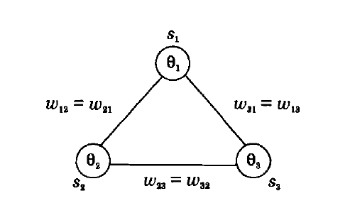
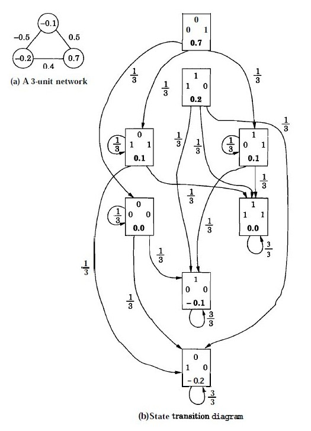
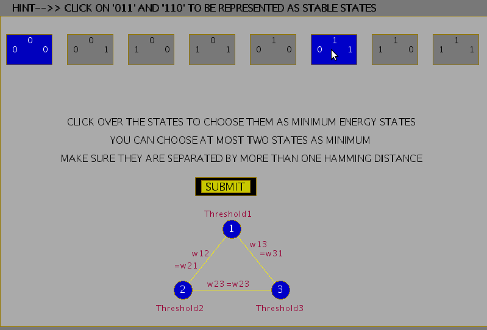
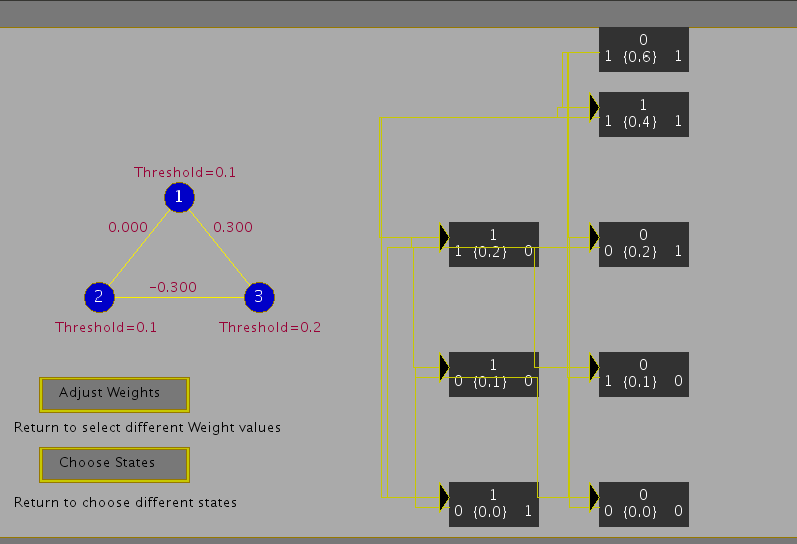
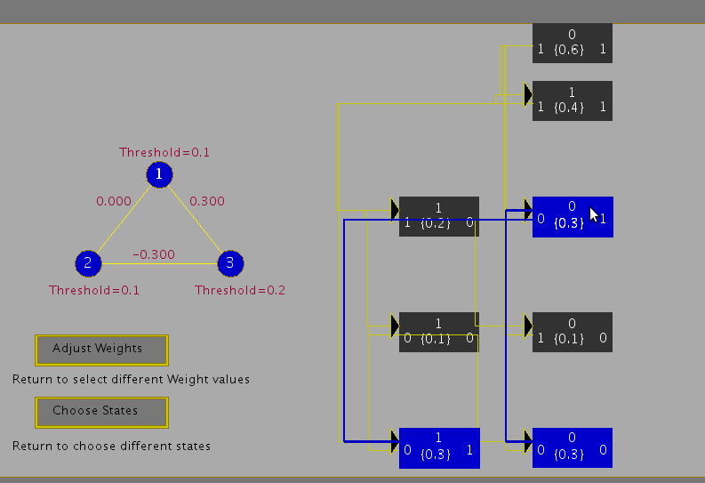

Computer Science & Engineering →Artificial Neural Networks Virtual Lab →List Of Experiments
Hopfield model for pattern storage task
Illustration of state transition diagram for a 3-unit feedback network
Consider a 3-unit feedback network with symmetric weights \( w_{ij} = w_{ji} \). The units have a threshold value of \( \theta_i \), i = 1, 2, 3 and a binary {0, 1} output function. A binary output function is assumed for convenience, although the conclusions are equally valid for the bipolar {-1, +1} case. The following figure shows a 3-unit feedback network. The state update for the unit \(i\) is governed by the following equation.
\begin{align} s_i(t+1) = 1, if ~ \sum\limits_{j}w_{ij}s_j(t) \gt \theta_i \\ = 0, if ~ \sum\limits_{j}w_{ij}s_j(t) \le \theta_i \qquad(1)\\ \end{align}
|  |
Assuming the values
\( w_{12} = w_{21} = -0.5, w_{23} = w_{32} = 0.4, w_{31} = w_{13} = 0.5 \)
\( \theta_1 = -0.1, \theta_2 = -0.2, and ~ \theta_3 = 0.7, \)
we get the following energy values for each state.
V(000) = 0.0, V(001) = 0.7, V(010) = -0.2, V(100) = -0.1, V(011) = 0.1, V(101) = 0.1, V(110) = 0.2, V(111) = 0.0
The transition from any state to the next state can be computed using the state update equation. For example, if the current state is 000, by selecting any one unit, say unit 2, at random, we can find its next state by computing the activation value \( x_2 \) and comparing it with the threshold \(\theta_2\). Since \( x_2 (=0) \gt \theta_2 (= -0.2) \) the state of the unit 2 changes from 0 to 1. Thus, if we select this unit, there will be a transition from the state 000 to 010. Since we can select any one of the three units with equal probability, i.e., 1/3, the probability of making a transition from 000 to 010 is thus 1/3. Likewise by selecting the unit 1 for update, the network makes a transition from 000 to 100 with a probability 1/3. Selecting the unit 3 for update results in a transition from 000 to itself, since the activation \( x_3 (=0) \lt \theta_3 (=0.7).\)
By computing the transition probabilities for all the states, we get the state transition diagram as shown in Fig. 2.
|  |
Thus a Hopfield Model generates an energy landscape where states in model are associated with different energy values. Stable states are the states which lie in the bottom of this landscape or rather have minimum energies. These states can then be used for the pattern storage task. Following figures show the steps involved in the experiment to choose weights for a given hopfield model, which ascertain some chosen states to attain stability. The capacity of a Hopfield model is determined by the number of patterns being stored as well as the probability of error that can be expected in the recall of patterns. For a N-unit network; where say L patterns are to be stored, for a probability of error of recall \(P_e=0.001\), the maximum storage capacity is given by \(L_{max}/N = 0.105\)
|  |
 |
|  |
|  |